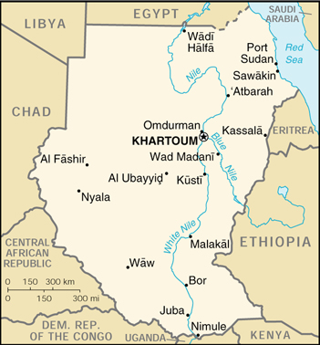

![[Country Flag of Sudan]](../flags/su-lgflag.jpg)
| Sudan |
|
         |
 | |
| Introduction |
Background: Military dictatorships promulgating an Islamic government have mostly run the country since independence from the UK in 1956. Over the past two decades, a civil war pitting black Christians and animists in the south against the Arab-Muslims of the north has cost at least 1.5 million lives in war and famine-related deaths, as well as the displacement of millions of others.
| Geography |
Location: Northern Africa, bordering the Red Sea, between Egypt and Eritrea
Geographic coordinates: 15 00 N, 30 00 E
Map references: Africa
Area:
total:
2,505,810 sq km
land:
2.376 million sq km
water:
129,810 sq km
Area - comparative: slightly more than one-quarter the size of the US
Land boundaries:
total:
7,687 km
border countries:
Central African Republic 1,165 km, Chad 1,360 km, Democratic Republic of the Congo 628 km, Egypt 1,273 km, Eritrea 605 km, Ethiopia 1,606 km, Kenya 232 km, Libya 383 km, Uganda 435 km
Coastline: 853 km
Maritime claims:
contiguous zone:
18 nm
continental shelf:
200-m depth or to the depth of exploitation
territorial sea:
12 nm
Climate: tropical in south; arid desert in north; rainy season (April to October)
Terrain: generally flat, featureless plain; mountains in east and west
Elevation extremes:
lowest point:
Red Sea 0 m
highest point:
Kinyeti 3,187 m
Natural resources: petroleum; small reserves of iron ore, copper, chromium ore, zinc, tungsten, mica, silver, gold, hydropower
Land use:
arable land:
5%
permanent crops:
0%
permanent pastures:
46%
forests and woodland:
19%
other:
30% (1993 est.)
Irrigated land: 19,460 sq km (1993 est.)
Natural hazards: dust storms
Environment - current issues: inadequate supplies of potable water; wildlife populations threatened by excessive hunting; soil erosion; desertification
Environment - international agreements:
party to:
Biodiversity, Climate Change, Desertification, Endangered Species, Law of the Sea, Nuclear Test Ban, Ozone Layer Protection
signed, but not ratified:
none of the selected agreements
Geography - note: largest country in Africa; dominated by the Nile and its tributaries
| People |
Population: 35,079,814 (July 2000 est.)
Age structure:
0-14 years:
45% (male 8,064,592; female 7,712,839)
15-64 years:
53% (male 9,300,886; female 9,290,340)
65 years and over:
2% (male 406,034; female 305,123) (2000 est.)
Population growth rate: 2.84% (2000 est.)
Birth rate: 38.58 births/1,000 population (2000 est.)
Death rate: 10.28 deaths/1,000 population (2000 est.)
Net migration rate: 0.05 migrant(s)/1,000 population (2000 est.)
Sex ratio:
at birth:
1.05 male(s)/female
under 15 years:
1.05 male(s)/female
15-64 years:
1 male(s)/female
65 years and over:
1.33 male(s)/female
total population:
1.03 male(s)/female (2000 est.)
Infant mortality rate: 70.21 deaths/1,000 live births (2000 est.)
Life expectancy at birth:
total population:
56.55 years
male:
55.49 years
female:
57.66 years (2000 est.)
Total fertility rate: 5.47 children born/woman (2000 est.)
Nationality:
noun:
Sudanese (singular and plural)
adjective:
Sudanese
Ethnic groups: black 52%, Arab 39%, Beja 6%, foreigners 2%, other 1%
Religions: Sunni Muslim 70% (in north), indigenous beliefs 25%, Christian 5% (mostly in south and Khartoum)
Languages:
Arabic (official), Nubian, Ta Bedawie, diverse dialects of Nilotic, Nilo-Hamitic, Sudanic languages, English
note:
program of Arabization in process
Literacy:
definition:
age 15 and over can read and write
total population:
46.1%
male:
57.7%
female:
34.6% (1995 est.)
| Government |
Country name:
conventional long form:
Republic of the Sudan
conventional short form:
Sudan
local long form:
Jumhuriyat as-Sudan
local short form:
As-Sudan
former:
Anglo-Egyptian Sudan
Data code: SU
Government type: transitional - previously ruling military junta; presidential and National Assembly elections held in March 1996; new constitution drafted by Presidential Committee, went into effect on 30 June 1998 after being approved in nationwide referendum
Capital: Khartoum
Administrative divisions: 26 states (wilayat, singular - wilayah); A'ali an Nil, Al Bahr al Ahmar, Al Buhayrat, Al Jazirah, Al Khartum, Al Qadarif, Al Wahdah, An Nil al Abyad, An Nil al Azraq, Ash Shamaliyah, Bahr al Jabal, Gharb al Istiwa'iyah, Gharb Bahr al Ghazal, Gharb Darfur, Gharb Kurdufan, Janub Darfur, Janub Kurdufan, Junqali, Kassala, Nahr an Nil, Shamal Bahr al Ghazal, Shamal Darfur, Shamal Kurdufan, Sharq al Istiwa'iyah, Sinnar, Warab
Independence: 1 January 1956 (from Egypt and UK)
National holiday: Independence Day, 1 January (1956)
Constitution: 12 April 1973, suspended following coup of 6 April 1985; interim constitution of 10 October 1985 suspended following coup of 30 June 1989; new constitution implemented on 30 June 1998 partially suspended 12 December 1999 by President BASHIR
Legal system: based on English common law and Islamic law; as of 20 January 1991, the now defunct Revolutionary Command Council imposed Islamic law in the northern states; Islamic law applies to all residents of the northern states regardless of their religion; some separate religious courts; accepts compulsory ICJ jurisdiction, with reservations
Suffrage: NA years of age; universal, but noncompulsory
Executive branch:
chief of state:
President Lt. Gen. Umar Hasan Ahmad al-BASHIR (since 16 October 1993); First Vice President Ali Uthman Muhammad TAHA (since 17 February 1998), Second Vice President (Police) Maj. Gen. George KONGOR AROP (since NA February 1994); note - the president is both the chief of state and head of government
head of government:
President Lt. Gen. Umar Hasan Ahmad al-BASHIR (since 16 October 1993); First Vice President Ali Uthman Muhammad TAHA (since 17 February 1998), Second Vice President (Police) Maj. Gen. George KONGOR AROP (since NA February 1994); note - the president is both the chief of state and head of government
cabinet:
Cabinet appointed by the president; note - President BASHIR's government is dominated by members of Sudan's National Islamic Front (NIF), a fundamentalist political organization formed from the Muslim Brotherhood in 1986; in 1998, the NIF created the National Congress as its legal front; the National Congress/NIF dominates much of Khartoum's overall domestic and foreign policies; President BASHIR named a new cabinet on 20 April 1996 which includes members of the National Islamic Front, serving and retired military officers, and civilian technocrats; on 8 March 1998, he reshuffled the cabinet and brought in several former rebel and opposition members as ministers; he reshuffled his cabinet again on 24 January 2000 but announced few changes
elections:
president elected by popular vote for a five-year term; election last held 6-17 March 1996 (next to be held NA 2001)
election results:
Umar Hasan Ahmad al-BASHIR elected president; percent of vote - Umar Hasan Ahmad al-BASHIR 75.7%; note - about forty other candidates ran for president
note:
BASHIR, as chairman of the Revolutionary Command Council for National Salvation (RCC), assumed power on 30 June 1989 and served concurrently as chief of state, chairman of the RCC, prime minister, and minister of defense until 16 October 1993 when he was appointed president by the RCC; upon its dissolution on 16 October 1993, the RCC's executive and legislative powers were devolved to the president and the Transitional National Assembly (TNA), Sudan's appointed legislative body, which has since been replaced by the National Assembly elected in March 1996; on 12 December 1999 BASHIR dismissed the National Assembly during an internal power struggle between the president and speaker of the Parliament Hasan al-TURABI
Legislative branch:
unicameral National Assembly (400 seats; 275 elected by popular vote, 125 elected by a supra assembly of interest groups known as the National Congress)
elections:
last held 6-17 March 1996 (next scheduled for NA 2000)
election results:
NA; the March 1996 elections were held on a nonparty basis; parties are banned in the new National Assembly
note:
on 12 December 1999, President BASHIR sent troops to take over parliament
Judicial branch: Supreme Court; Special Revolutionary Courts
Political parties and leaders:
political parties were banned following 30 June 1989 coup, however, political "associations" are allowed under a new law drafted in 1998 and implemented on 1 January 1999 and include - National Congress [Umar Hasan Ahmad al-BASHIR]
note:
the political association law is currently under review
Political pressure groups and leaders: National Islamic Front or NIF [Hasan al-TURABI] (the National Congress operates as its legal front)
International organization participation: ABEDA, ACP, AfDB, AFESD, AL, AMF, CAEU, CCC, ECA, FAO, G-77, IAEA, IBRD, ICAO, ICRM, IDA, IDB, IFAD, IFC, IFRCS, IGAD, ILO, IMF, IMO, Intelsat, Interpol, IOC, IOM, ISO (correspondent), ITU, NAM, OAU, OIC, PCA, UN, UNCTAD, UNESCO, UNHCR, UNIDO, UNU, UPU, WFTU, WHO, WIPO, WMO, WToO, WTrO (observer)
Diplomatic representation in the US:
chief of mission:
Ambassador Mahdi Ibrahim MAHAMMAD (recalled to Khartoum in August 1998)
chancery:
2210 Massachusetts Avenue NW, Washington, DC 20008
telephone:
[1] (202) 338-8565
FAX:
[1] (202) 667-2406
Diplomatic representation from the US: US officials at the US Embassy in Khartoum were moved for security reasons in February 1996 and have been relocated to the US Embassies in Nairobi, Kenya and Cairo, Egypt; the US Embassy in Khartoum (located on Sharia Abdul Latif Avenue; mailing address - P. O. Box 699, Khartoum; APO AE 09829; telephone - [249] (11) 774611 or 774700; FAX - [249] (11) 774137) is kept open by local employees; the US Embassy in Nairobi, Kenya is located in the Interim Office Building on Mombasa Road, Nairobi; mailing address - P. O. Box 30137, Box 21A, Unit 64100, APO AE 09831; telephone - [254] (2) 751613; FAX - [254] (2) 743204; the US Embassy in Cairo, Egypt is located at (North Gate) 8, Kamel El-Din Salah Street, Garden City, Cairo; mailing address - Unit 64900, APO AE 09839-4900; telephone - [20] (2) 3557371; FAX - [20] (2) 3573200
Flag description: three equal horizontal bands of red (top), white, and black with a green isosceles triangle based on the hoist side
| Economy |
Economy - overview: Sudan is buffeted by civil war, chronic political instability, adverse weather, weak world commodity prices, a drop in remittances from abroad, and counterproductive economic policies. The private sector's main areas of activity are agriculture and trading, with most private industrial investment predating 1980. Agriculture employs 80% of the work force. Industry mainly processes agricultural items. Sluggish economic performance over the past decade, attributable largely to declining annual rainfall, has kept per capita income at low levels. A large foreign debt and huge arrears continue to cause difficulties. In 1990 the International Monetary Fund (IMF) took the unusual step of declaring Sudan noncooperative because of its nonpayment of arrears to the Fund. After Sudan backtracked on promised reforms in 1992-93, the IMF threatened to expel Sudan from the Fund. To avoid expulsion, Khartoum agreed to make token payments on its arrears to the Fund, liberalize exchange rates, and reduce subsidies, measures it has partially implemented. The government's continued prosecution of the civil war and its growing international isolation continued to inhibit growth in the nonagricultural sectors of the economy during 1999. The government has worked with foreign partners to develop the oil sector, and the country is producing approximately 150,000 barrels per day.
GDP: purchasing power parity - $32.6 billion (1999 est.)
GDP - real growth rate: 3% (1999 est.)
GDP - per capita: purchasing power parity - $940 (1999 est.)
GDP - composition by sector:
agriculture:
41%
industry:
17%
services:
42% (1997 est.)
Population below poverty line: NA%
Household income or consumption by percentage share:
lowest 10%:
NA%
highest 10%:
NA%
Inflation rate (consumer prices): 20% (1999 est.)
Labor force:
11 million (1996 est.)
note:
labor shortages for almost all categories of skilled employment (1983 est.)
Labor force - by occupation: agriculture 80%, industry and commerce 10%, government 6%, unemployed 4%
Unemployment rate: 30% (FY92/93 est.)
Budget:
revenues:
$1.2 billion
expenditures:
$1.3 billion, including capital expenditures of $NA (2000 est.)
Industries: cotton ginning, textiles, cement, edible oils, sugar, soap distilling, shoes, petroleum refining
Industrial production growth rate: 5% (1996 est.)
Electricity - production: 1.815 billion kWh (1998)
Electricity - production by source:
fossil fuel:
44.9%
hydro:
55.1%
nuclear:
0%
other:
0% (1998)
Electricity - consumption: 1.688 billion kWh (1998)
Electricity - exports: 0 kWh (1998)
Electricity - imports: 0 kWh (1998)
Agriculture - products: cotton, groundnuts (peanuts), sorghum, millet, wheat, gum arabic, sesame; sheep
Exports: $580 million (f.o.b., 1999 est.)
Exports - commodities: cotton, sesame, livestock, groundnuts, oil, gum arabic
Exports - partners: Saudi Arabia 24%, Italy 10%, Germany 5%, Egypt 5%, France 3%, Japan 3%, China 1% (1998)
Imports: $1.4 billion (c.i.f., 1999 est.)
Imports - commodities: foodstuffs, petroleum products, manufactured goods, machinery and transport equipment, medicines and chemicals, textiles
Imports - partners: China 27%, France 14%, UK 10%, Germany 7%, Japan 4%, Netherlands 3%, Canada 1% (1998)
Debt - external: $24 billion (1999 est.)
Economic aid - recipient: $187 million (1997)
Currency: 1 Sudanese dinar (SD) = 100 piastres; note - in July 1999 the Sudanese Central Bank made the formal declaration that all dealings with the Sudanese pound should stop
Exchange rates: Sudanese dinars (SD) per US$1 - 230.2 (1999), 172.2 (1998), 148.8 (1997), 118.2 (1996); (old currency) Sudanese pounds per US$1 - 2,526.34 (2d Qtr 1999), 2,008.02 (1998), 1,575.74 (1997), 1,250.79 (1996), 580.87 (1995)
Fiscal year: calendar year
| Communications |
Telephones - main lines in use: 75,000 (1995)
Telephones - mobile cellular: 3,000 (1998)
Telephone system:
large, well-equipped system by regional standards, but barely adequate and poorly maintained by modern standards; cellular communications started in 1996
domestic:
consists of microwave radio relay, cable, radiotelephone communications, tropospheric scatter, and a domestic satellite system with 14 earth stations
international:
satellite earth stations - 1 Intelsat (Atlantic Ocean) and 1 Arabsat
Radio broadcast stations: AM 12, FM 1, shortwave 1 (1998)
Radios: 7.55 million (1997)
Television broadcast stations: 3 (1997)
Televisions: 2.38 million (1997)
Internet Service Providers (ISPs): 1 (1999)
| Transportation |
Railways:
total:
5,311 km
narrow gauge:
4,595 km 1.067-m gauge; 716 km 1.6096-m gauge plantation line
note:
the main line linking Khartoum to Port Sudan carries over two-thirds of Sudan's rail traffic
Highways:
total:
11,900 km
paved:
4,320 km
unpaved:
7,580 km (1996 est.)
Waterways: 5,310 km navigable
Pipelines: refined products 815 km
Ports and harbors: Juba, Khartoum, Kusti, Malakal, Nimule, Port Sudan, Sawakin
Merchant marine:
total:
4 ships (1,000 GRT or over) totaling 38,093 GRT/49,727 DWT
ships by type:
cargo 2, roll-on/roll-off 2 (1999 est.)
Airports: 61 (1999 est.)
Airports - with paved runways:
total:
12
over 3,047 m:
1
2,438 to 3,047 m:
8
1,524 to 2,437 m:
3 (1999 est.)
Airports - with unpaved runways:
total:
49
1,524 to 2,437 m:
15
914 to 1,523 m:
24
under 914 m:
10 (1999 est.)
Heliports: 1 (1999 est.)
| Military |
Military branches: Army, Navy, Air Force, Popular Defense Force Militia
Military manpower - military age: 18 years of age
Military manpower - availability:
males age 15-49:
8,144,048 (2000 est.)
Military manpower - fit for military service:
males age 15-49:
5,014,429 (2000 est.)
Military manpower - reaching military age annually:
males:
386,168 (2000 est.)
Military expenditures - dollar figure: $550 million (FY98)
Military expenditures - percent of GDP: NA%
| Transnational Issues |
Disputes - international: administrative boundary with Kenya does not coincide with international boundary; Egypt asserts its claim to the "Hala'ib Triangle," a barren area of 20,580 sq km under partial Sudanese administration that is defined by an administrative boundary which supersedes the treaty boundary of 1899